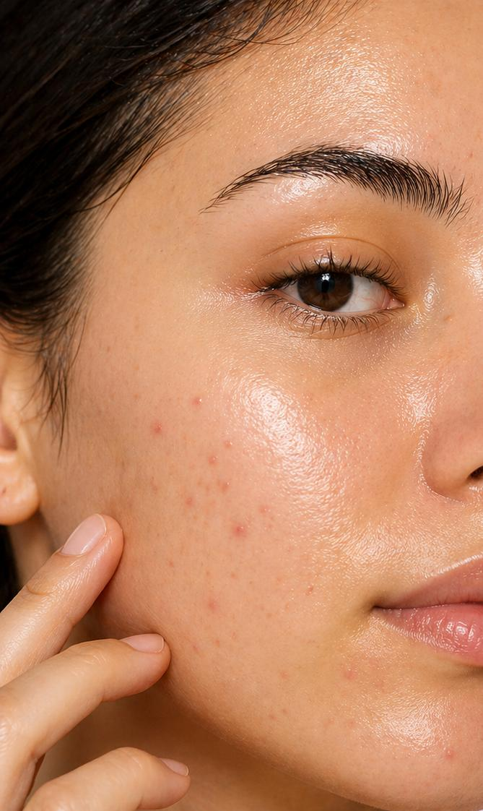
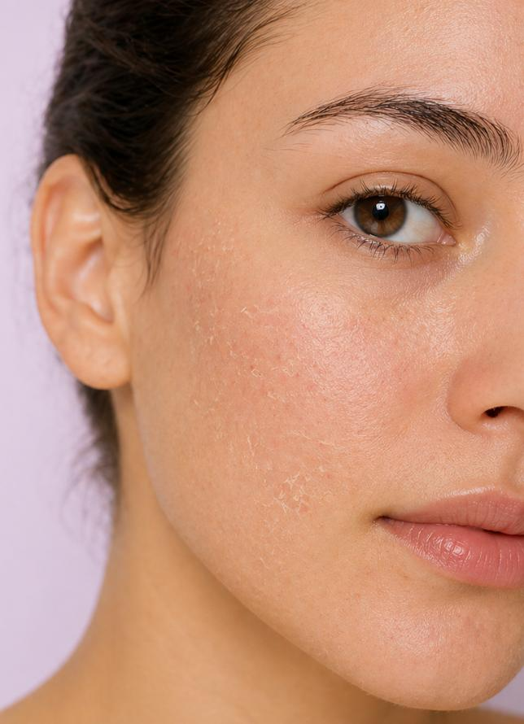
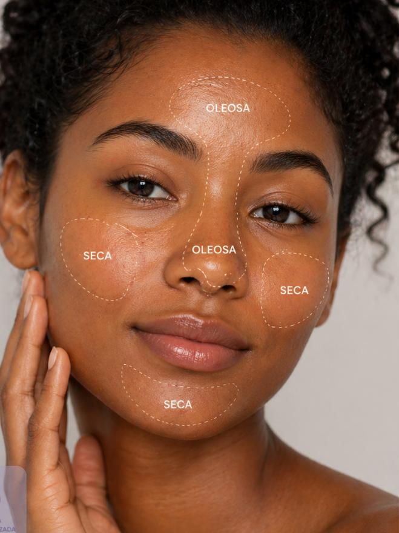

Tipos de pele

Pele OleosaPara cuidar da pele oleosa, o mais importante é manter uma rotina simples no dia a dia. Lave o rosto duas vezes ao dia com um sabonete próprio para pele oleosa, use um hidratante leve (mesmo tendo oleosidade) e aplique protetor solar todos os dias, de preferência com efeito matte. Evite produtos muito pesados ou oleosos e não lave o rosto muitas vezes, pois isso pode aumentar a produção de óleo. Também ajuda fazer uma esfoliação leve uma ou duas vezes por semana. Se a oleosidade for muito intensa ou vier com acne, é bom procurar um dermatologista.

Pele SecaPara cuidar da pele seca, o mais importante é manter uma rotina de hidratação intensa. Use um sabonete suave e hidratante para lavar o rosto, evite água muito quente e aplique um hidratante rico em ingredientes como ácido hialurônico, glicerina ou ceramidas logo após a limpeza. O protetor solar também é essencial para proteger a pele dos danos causados pelos raios UV. Evite produtos que contenham álcool ou fragrâncias fortes, pois podem ressecar ainda mais a pele. Fazer uma esfoliação leve uma vez por semana pode ajudar a remover as células mortas e melhorar a absorção dos hidratantes.

Pele MistaPara cuidar da pele mista, o mais importante é equilibrar as necessidades das diferentes áreas do rosto. Use um sabonete suave para limpar a pele, aplicando um hidratante leve nas áreas oleosas (geralmente testa, nariz e queixo) e um hidratante mais rico nas áreas secas (bochechas). O protetor solar é essencial para proteger a pele dos danos causados pelos raios UV. Evite produtos muito pesados ou oleosos nas áreas oleosas e produtos muito leves nas áreas secas. Fazer uma esfoliação leve uma ou duas vezes por semana pode ajudar a manter a pele equilibrada e saudável.
Pele NormalPara cuidar da pele normal, o mais importante é manter uma rotina de cuidados simples e consistente. Use um sabonete suave para limpar o rosto duas vezes ao dia, aplique um hidratante leve para manter a pele hidratada e use protetor solar diariamente para proteger a pele dos danos causados pelos raios UV. Evite produtos muito agressivos ou pesados, pois a pele normal geralmente não precisa de cuidados intensivos. Fazer uma esfoliação leve uma ou duas vezes por semana pode ajudar a manter a pele saudável e radiante.